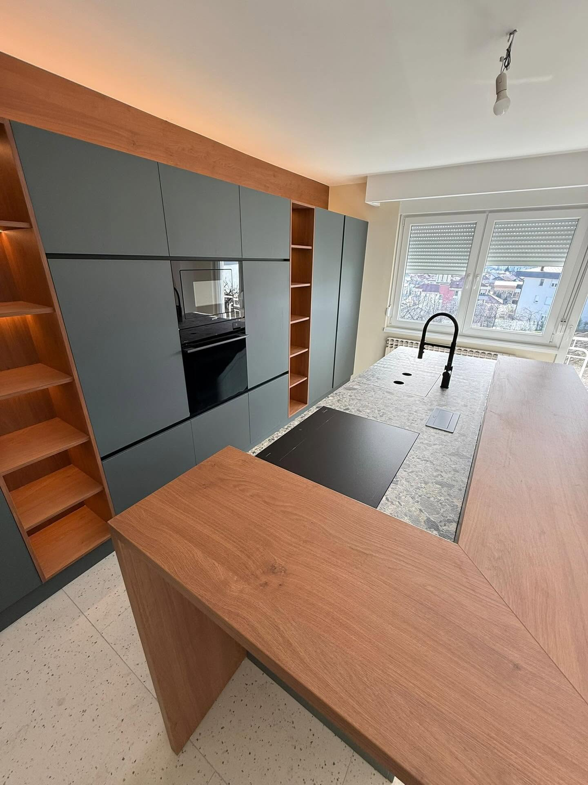
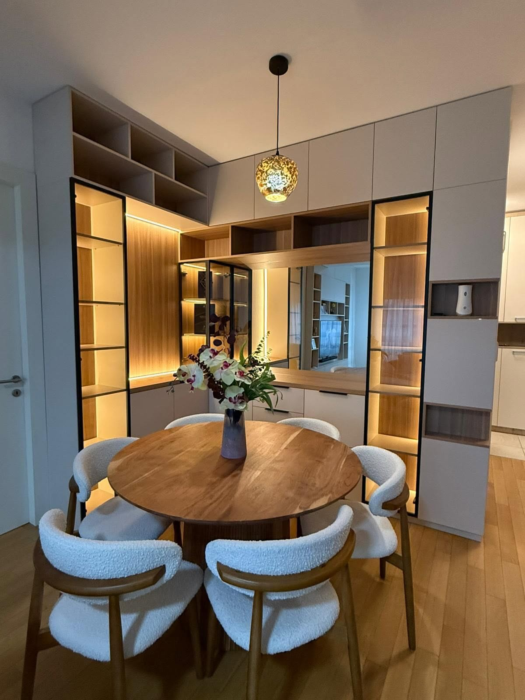
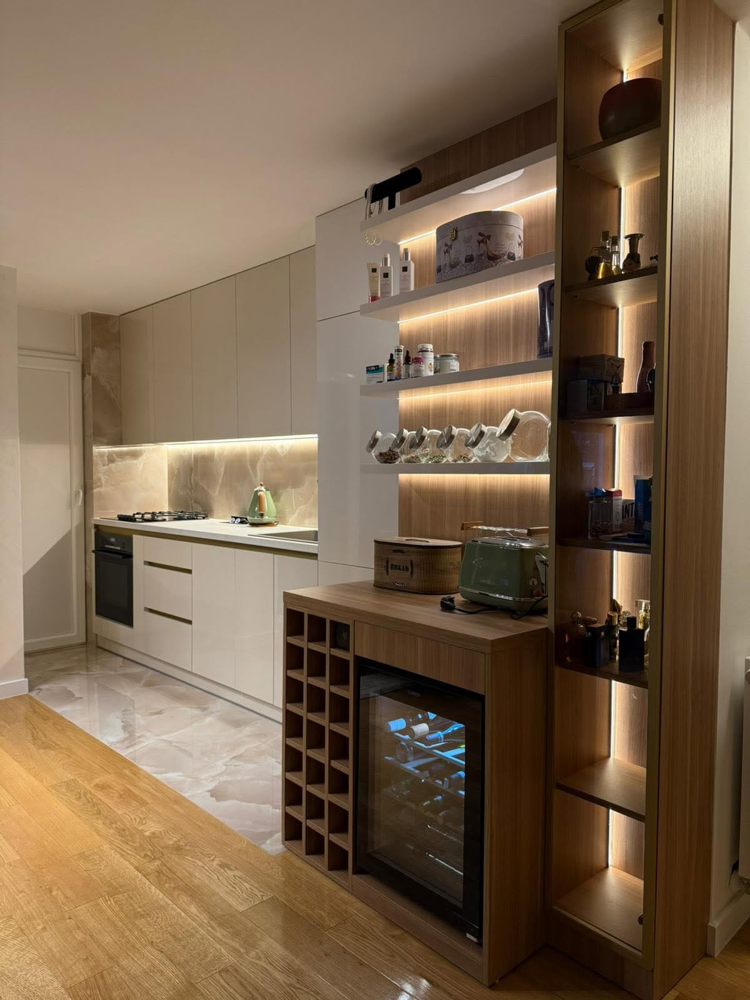
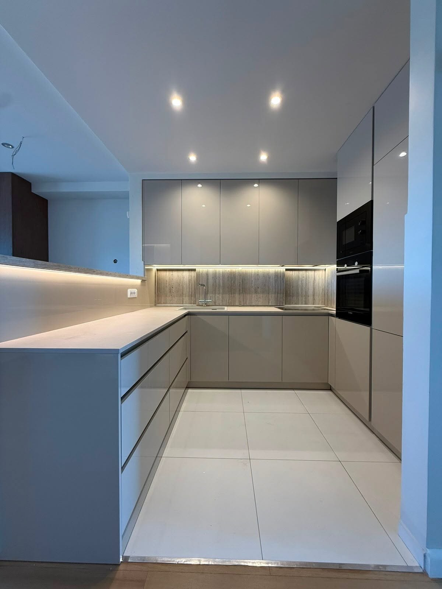

● [44.7650° N, 17.1980° E]BANJA LUKA · BOSNA I HERCEGOVINA[ARHITEKTURA & ZANAT]
SALON & PROIZVODNJA · STEPE STEPANOVIĆA 124
Stvaramo prostore koji traju.
Namještaj po vašoj mjeri
Arhitektonski pristup opremanju enterijera, fotorealistična 3D vizuelizacija i precizna proizvodnja namještaja u vlastitom pogonu. Spajamo vrhunske materijale — lakirani medijapan, prirodni furnir i Blum okove — sa unikatnim zahtjevima vašeg doma i poslovanja.
15+
Godina Iskustva
850+
Opremljenih Objekata
100%
Po Vašoj Mjeri

01 / 05— FOKUS REALIZACIJA
01 // KUHINJA PO MJERI
Luksuzna Kuhinja od Lakiranog Medijapana
Banja Luka — Nova Varoš4.80m x 2.60mLakirani MDF, Compact 12mm, Blum mehanizmi


SHOWROOM & SALON Banja Luka, BiH
01 / ZANAT & PRECIZNOST
Svaki komad priča vašu priču.
„U MB Projektu svaki komad namještaja nastaje kao unikatno arhitektonsko rješenje — ne serijski proizvod, već tačan odgovor na potrebe vašeg načina života.“
Naša osnovna djelatnost je proizvodnja namještaja po mjeri, unutrašnja arhitektura, 3D vizuelizacija i cjelokupno opremanje stambenih i komercijalnih prostora. Nalazimo se u Banjoj Luci na adresi Bulevar vojvode Stepe Stepanovića 124.
Radimo isključivo sa certificiranim materijalima provjerenog evropskog kvaliteta: lakirani medijapan (MDF) u svim RAL i NCS nijansama, prirodni furnir, kompakt ploče, akril, masiv te dekori renomiranih brendova Egger i Kronospan. Sve elemente opremamo originalnim Blum i Hettich okovima uz doživotnu garanciju na mehanizme.
✓
Vlastiti Proizvodni Pogon
Najsavremenija CNC obrada i komora za profesionalno lakiranje.
✓
Fotorealistična 3D Vizuelizacija
Vidite vaš budući prostor u renderu prije početka rezanja materijala.
✓
Besplatno Lasersko Mjerenje
Dolazimo na vašu lokaciju sa uzorcima dekora i boja.
✓
Garancija & Montaža
Iskusan tim stolara osigurava tihu, pedantnu i čistu ugradnju.
Pogledajte odabrane projekte namještaja po mjeri izrađene za stanove, porodične kuće, vile i poslovne prostore u Banjoj Luci i okolini.

ISTAKNUTA REALIZACIJA
01 // PREMIJUM REALIZACIJA · BANJA LUKA
Moderna Monolitna Kuhinja sa Skrivenom Špajzom
Kuhinja od poda do plafona izvedena u kombinaciji mat lakiranog medijapana sa premazom otpornim na otiske prstiju i kompaktnom radnom pločom od 12mm. Skrivena vrata unutar ormara omogućavaju neprimijetan ulazak u pomoćnu prostoriju, čuvajući savršenu minimalističku geometriju.
Lakirani MDF Mat
Blum SERVO-DRIVE
Starčevica, Banja Luka
ZANAT
FILOZOFIJA PRECIZNOSTI · BANJA LUKA
Mjera čini razliku između namještaja i doma.
„U MB Projekt radionici svaki milimetar ima svoju svrhu. Biramo samo materijale i okove koji mogu izdržati decenije svakodnevnog otvaranja, kuhanja i života — stvarajući enterijere koji nikada ne izlaze iz mode.“
Rješenja „ključ u ruke“ za stanove, apartmane, vile, ugostiteljske objekte, ordinacije i kancelarije. Cjelokupan enterijer u jednom prepoznatljivom stilu.
Sve što trebate znati prije početka izrade namještaja po mjeri za vaš dom ili poslovni objekat.
Preporučujemo da nas kontaktirate već u fazi grubih radova ili keramičkih instalacija. Standardni rok izrade je između 20 i 35 radnih dana od potvrde 3D projekta i uplata avansa, u zavisnosti od složenosti i odabranih materijala (npr. sušenje lakiranog medijapana zahtijeva stroge tehnološke cikluse).
Da! Za klijente na području Banje Luke i okoline dolazak na lice mjesta, lasersko uzimanje tačnih mjera i izrada 3D vizuelizacije uračunati su u ponudu. U našem salonu možete pregledati i opipati stvarne uzorke materijala kako biste donijeli pravu odluku.
Za sve Blum i Hettich mehanizme i šarke obezbijeđena je zvanična doživotna garancija proizvođača na funkcionalnost. Na sam namještaj, drvene spojeve i kantovanje dajemo 2 godine garancije uz obezbijeđen servis i tehničku podršku.
Da, redovno radimo projekte širom Bosne i Hercegovine (Prijedor, Gradiška, Doboj, Laktaši, Sarajevo...), kao i opremanje objekata u inostranstvu za klijente iz dijaspore (Hrvatska, Slovenija, Austrija, Njemačka, Švajcarska) uz organizovan transport i ugradnju.
Plaćanje se vrši avansno u iznosu od 50% prilikom potpisivanja ugovora i početka nabavke materijala, dok se preostalih 50% plaća nakon završene montaže i vašeg pregleda izvedenih radova. Plaćanje je moguće virmanski ili gotovinski uz uredan fiskalni račun.
SHOWROOM & PROIZVODNJA
Imate ideju za novi namještaj?
Pošaljite nam dimenzije prostora ili nas posjetite u našem izložbenom salonu u Banjoj Luci. Doći ćemo na vašu adresu sa uzorcima materijala i idejama.
Adresa Izložbenog Salona
Bulevar vojvode Stepe Stepanovića 124 78000 Banja Luka, Bosna i Hercegovina